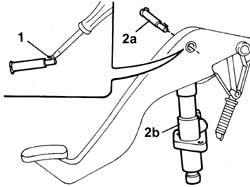

1820B20 MASTER CYLINDER (PUMP) - R + R
- Path
- Procedures > 18 CLUTCH UNIT > 1820 CLUTCH RELEASE CONTROLS > 1820B HYDRAULIC CLUTCH SYSTEM > 1820B20 MASTER CYLINDER (PUMP) - R + R
- Kind
- repair procedure (removal / refitting; the operation number is the code)
- Applies to
- all engines; all production periods
- Interactive page
- https://sloeber94.github.io/elrnDB-fDct/en/#/244001012
Applies to: all engines; all production periods
 Removing
Removing
 Refitting
RefittingOp. 3330B26 CLUTCH PEDAL - R+R
1. Using a suitable size screwdriver, release the pin retaining spring.
2. Extract the pin (2a) and remove the pump master cylinder (2b) from the housing in the clutch pedal.

Applies to: all engines; all production periods
Refitting
Removing- Fit the pump master cylinder in the housing in the clutch pedal and secure it to the pedal using the pin.